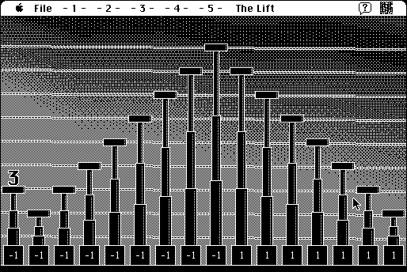

copyright: Cliff Johnson
mod date: May 23, 2002
license: freeware
official url : link removed for not complying with copyright law
Another from the auther of The Fool’s Errand. “MacUser’s 1991 ‘Best Game of the Year’ follows in the footsteps of The Fool’s Errand as meta-puzzle deluxe.” “One day in Corporate America, a freak power surge zaps the number 3 off her cozy spreadsheet home and into the heart of the computer where numbers don’t count and the letters spell disaster.”
